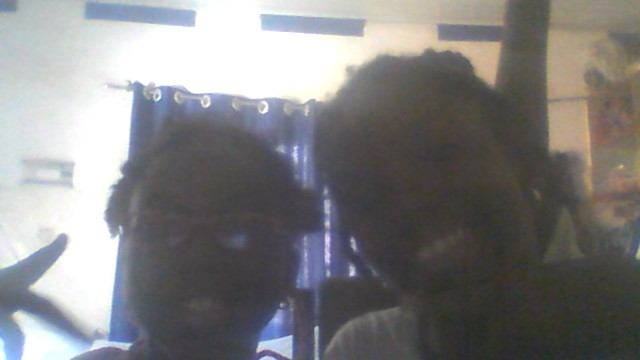

Lets get started!
My name is Rora. I recently finished Elementary Education, and I am currently in my 2nd year of high school. In my basic education, I focused on developing strong foundational skills in mathematics, science, language and arts. I have a strong understanding of HTML and I am currently learning CSS and JavaScript. I am very passionate about learning programming and I enjoy solving problems. I don't have any experience in the field yet, but I am eager to learn and grow. I am excited about the opportunities to further develop my skills and contribute to the field of web development. I don't give up easily and I am always looking for ways to improve.
I have no formal work experience yet, but I have been involved in various projects and activities that have helped me develop my skills and knowledge. I have also completed several online courses and tutorials, which have helped me gain practical experience in web development.
My skills include basic knowledge of HTML tags and attributes. I am constantly learning and improving my skills in this area. I am eager to continue learning and developing my skills in these areas. Overall, I am a motivated and dedicated individual with a strong interest in web development and programming.
My achievements include completing several online courses and tutorials in web development. I have also participated in various coding challenges, which have helped me improve my problem-solving skills and gain practical experience in programming. I am proud of my achievements and I am excited to continue learning and growing in this field I am also proud of my ability to learn quickly and adapt to new challenges, which has helped me succeed in my studies and personal projects. I am committed to continuing my education and pursuing opportunities to further develop my skills and knowledge in web development and programming.
